GIT Ariketa 5.1.2
Contenido completo del documento original del ejercicio.
GIT Ariketa 5.1.2
Crea la carpeta ariketa5.1.2-tuNombreApellido (ej: ariketa5.1.2-IgorGoikoetxea) y conviértela en un repositorio de Git.
Git init
Crea dos ficheros: servidor.txt y seguridad.txt. Escribe "Servidor activo" y "Reglas de firewall" respectivamente dentro de cada uno.
Haz un commit con el mensaje: "Estado inicial del sistema".
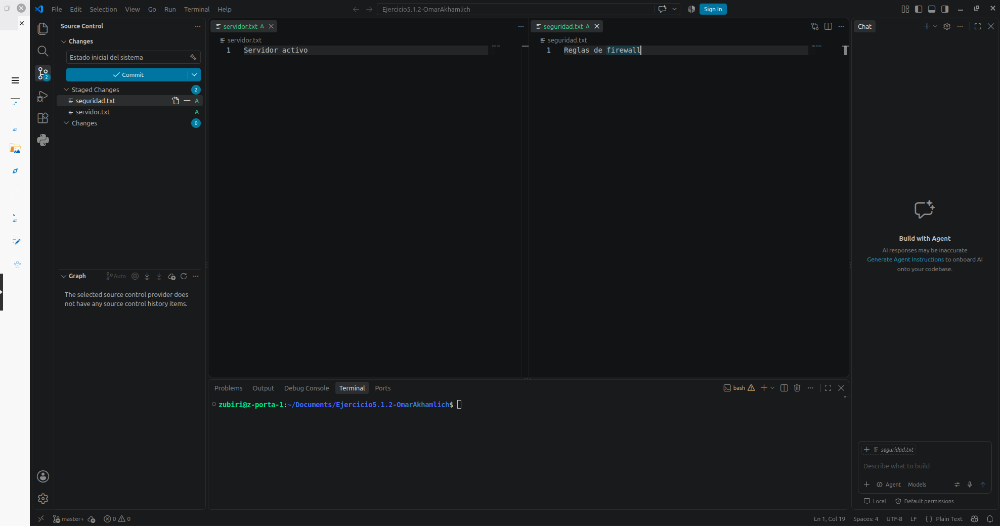
Crea dos ramas sin cambiarte a ellas todavía: desarrollo y hotfix.
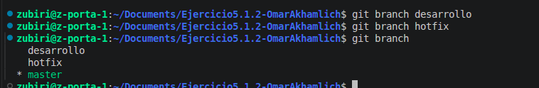
Salta a la rama desarrollo, crea un nuevo fichero llamado mfa.txt, escribe dentro "Autenticacion de doble factor" y haz un commit con el mensaje: "Añadido modulo MFA".
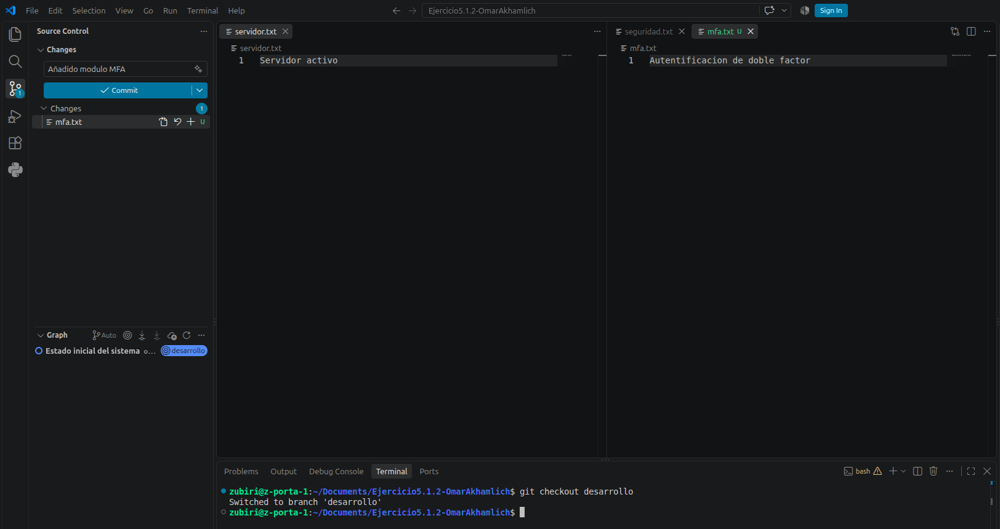
Desde la rama desarrollo, crea y salta en un solo comando a una tercera rama llamada experimental.
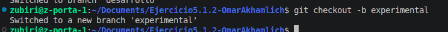
Modifica el archivo servidor.txt añadiendo al final la frase " - Modo Pruebas" y haz un commit con el mensaje: "Servidor en modo pruebas".
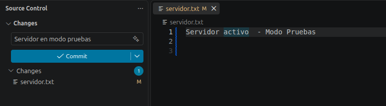
Salta de nuevo a la rama desarrollo y abre el archivo servidor.txt. ¿Aparece la frase " - Modo Pruebas"? ¿Por qué?
La frase no sale en la rama de desarrollo, ya que este cambio se hizo en una distinta llamada experimental.
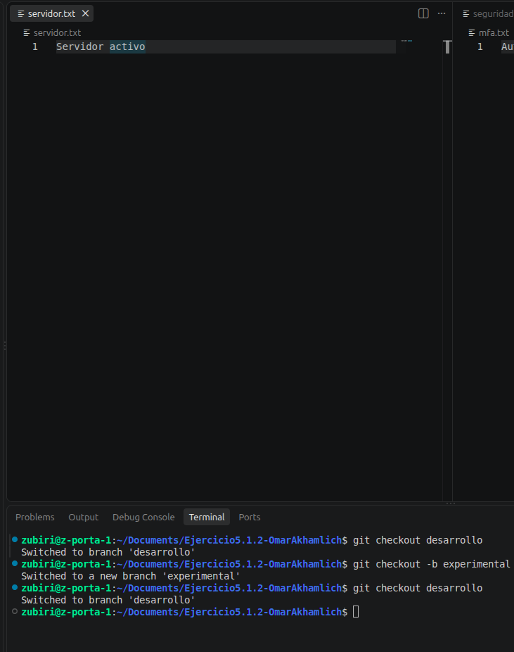
Desde la rama desarrollo, haz un merge con la rama experimental.
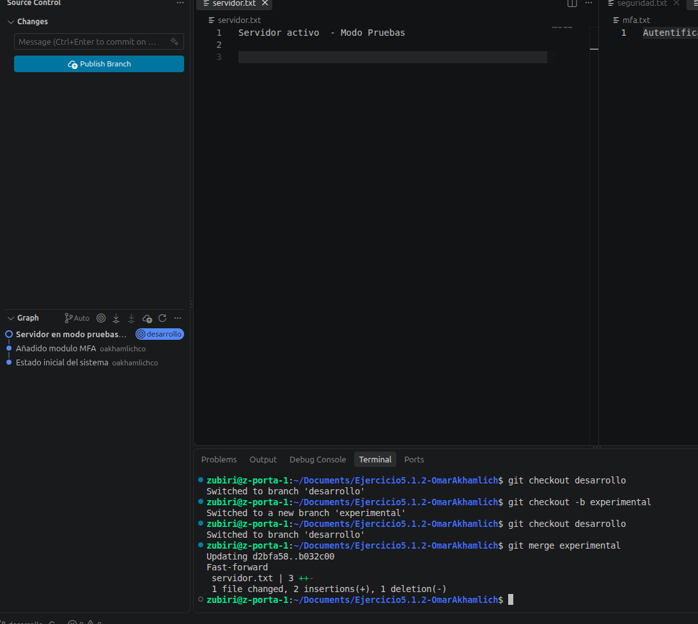
Borra la rama experimental y comprueba con un comando de listado que se ha eliminado correctamente.
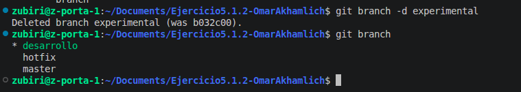
Salta a la rama hotfix. Modifica la línea de servidor.txt para que ponga: "Servidor en mantenimiento urgente" y haz commit con el mensaje: "Parche urgente en servidor".
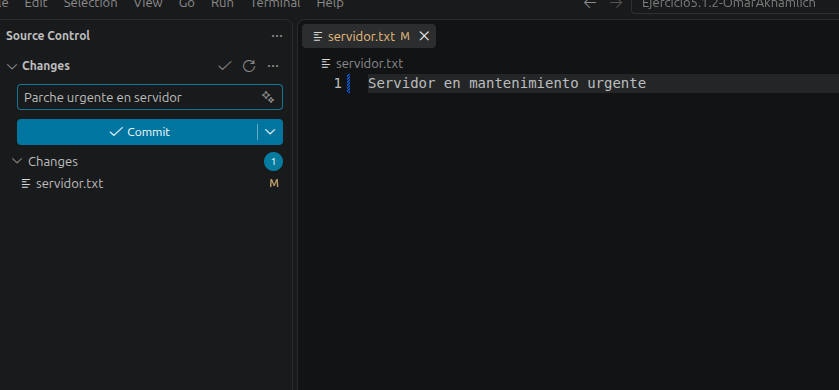
Salta a la rama main (o master). Modifica la misma línea de servidor.txt para que ponga: "Servidor actualizado v2.0" y haz commit con el mensaje: "Actualizacion v2.0".
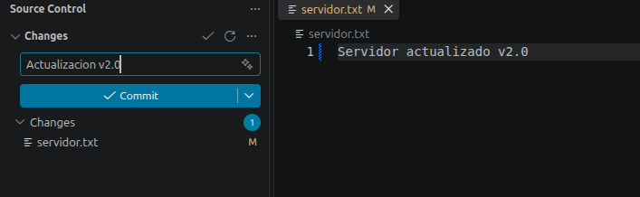
Desde la rama main, intenta hacer un merge con la rama hotfix. ¿Qué ha pasado en la consola?
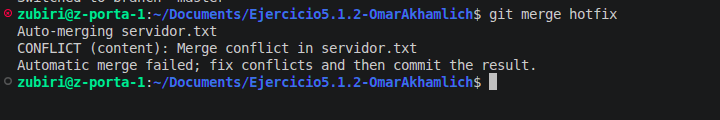
La consola detecta cambios en ambas ramas, generando conflicto.
Abre el archivo servidor.txt. ¿Qué símbolos raros ha añadido Git y qué significa cada bloque?
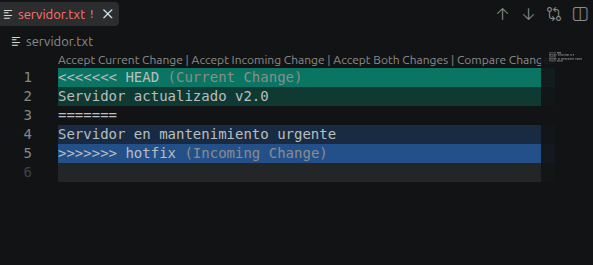
En el archivo git diferencia cambios de cada rama con los siguientes simbolos < = > Asi el usuario puede saber de donde viene cada cambio, y decidir con que quedarse.
Resuelve el conflicto editando el archivo para que la línea final sea: "Servidor en mantenimiento v2.0".
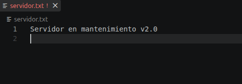
Intenta hacer git commit directamente sin ejecutar git add. ¿Qué te advierte Git?
Git te advierte de que hay conflictos aun sin resolver, por lo que no puedes aun hacer commit hasta resolverlo.
Ejecuta los comandos necesarios para marcar el conflicto como resuelto y completar el commit de merge.
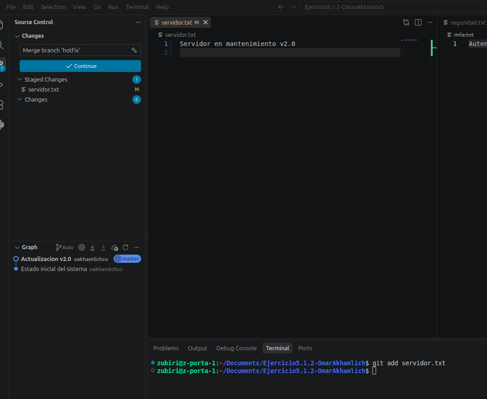
Muestra el historial gráfico de commits en una sola línea para comprobar cómo ha quedado el árbol del repositorio.
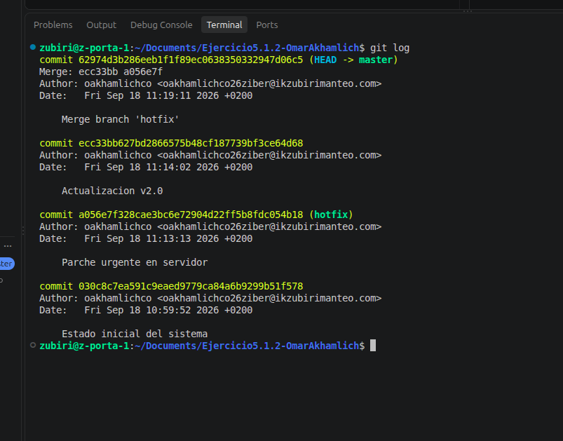
Extra
Estando en la rama desarrollo, empieza a escribir una línea en seguridad.txt pero no hagas commit.
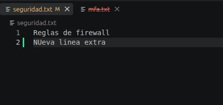
Simula una emergencia: intenta saltar a main. Git te bloqueará por tener cambios pendientes. ¿O no?
Depenediendo la configuracion de GIT, este te dejara cambiar de rama o no. PRo buenas practicas, Git suele denegar la opcion de cambiar de rama con cambios pendientes. Sin embargo, ciertos IDEs suelen permitir este cambio de rama, siempre haciendole saber a el usuario que tiene cambios pendientes que arrastrarar a la nueva rama, ofreciendo la opcion de git stash.
Ejecuta git stash para pausar el trabajo, salta a main para verificar algo rápido y vuelve a desarrollo.
git stash
Recupera tu trabajo con git stash pop.
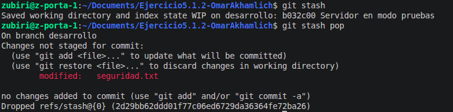
Comete un error intencionado en un commit (por ejemplo meter una clave o alguo similar en texto plano en un fichero para probat algo rápido) y deshazlo usando git revert HEAD para observar cómo queda registrado el despiste en git log.
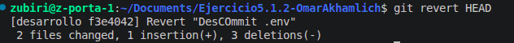
Explica con tus propias palabras para que han servido:
git stash: Es como una captura del momento con todos los cambios pendientes. Sirve para guardar cambios sin querer commitearlos
git stash pop: Revierte el git stash, devolviendote todos los cambios capturados tras el git stash
git revert HEAD: Revierte el ultimo commit hecho en la rama correspondiente.